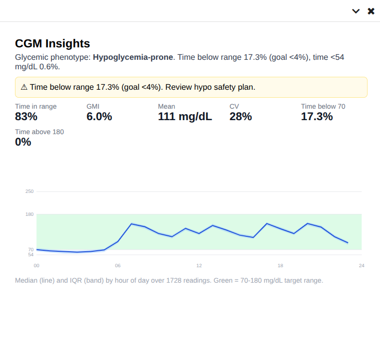

This page links the project's design and demo artifacts. The plugin itself reads CGM data from Nightscout, computes metrics in pure Python (sandbox-safe), and surfaces results as Canvas chart applications, protocol cards, and a hypoglycemia-safety banner.

Design
Feasibility & Architecture →
The full analysis: Canvas SDK/sandbox constraints, the Nightscout bridge, deployment topology, the proof-of-concept scope, reimbursement chain, and the plugin code skeleton.
DemoCGM Display Preview →
A static render of the in-Canvas output for four synthetic patient phenotypes: AGP chart, time-in-range metrics, triage, and billing readiness.
What it does
- CGM summary display — Ambulatory Glucose Profile (AGP) + TIR / GMI / %CV, rendered as a launchable chart application.
- Glycemic phenotype triage — hypoglycemia-prone, hyperglycemia-prone, high-variability, or at-goal, as a Canvas protocol card with a hypo-safety banner.
- Billing-readiness documentation — gated by data sufficiency (≥72 h for CPT 95251, ≥16 days for CPT 99454): a codified summary observation and a clinician review/sign prompt.
Design notes
- All analysis lives in a dependency-free
core/package (no numpy/scipy/pandas), so it runs unchanged inside the Canvas RestrictedPython sandbox and is unit-tested with plain pytest. - Ships only synthetic, de-identified CGM fixtures — no PHI.
- Does not mirror the raw glucose stream into Canvas; writes only low-cardinality summaries.
Source: github.com/bewest/canvas-medical-cgm-insights-prototype · MIT licensed